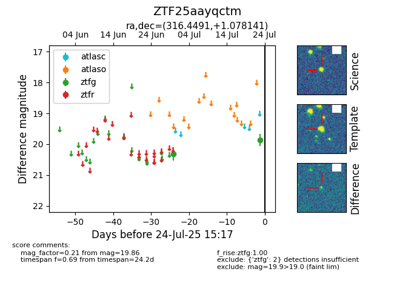

Target ZTF25aayqctm at 2025-07-24 15:17, see:
FINK: fink-portal.org/ZTF25aayqctm
Lasair: lasair-ztf.lsst.ac.uk/objects/ZTF25aayqctm
ALeRCE: alerce.online/object/ZTF25aayqctm
alt names
ZTF25aayqctm (ztf,fink)
coordinates:
equatorial (ra, dec) = (316.4491,+1.07814)
galactic (l, b) = (50.8294,-28.92807)
photometry
last ztfg=19.86
2 ztfg detections
